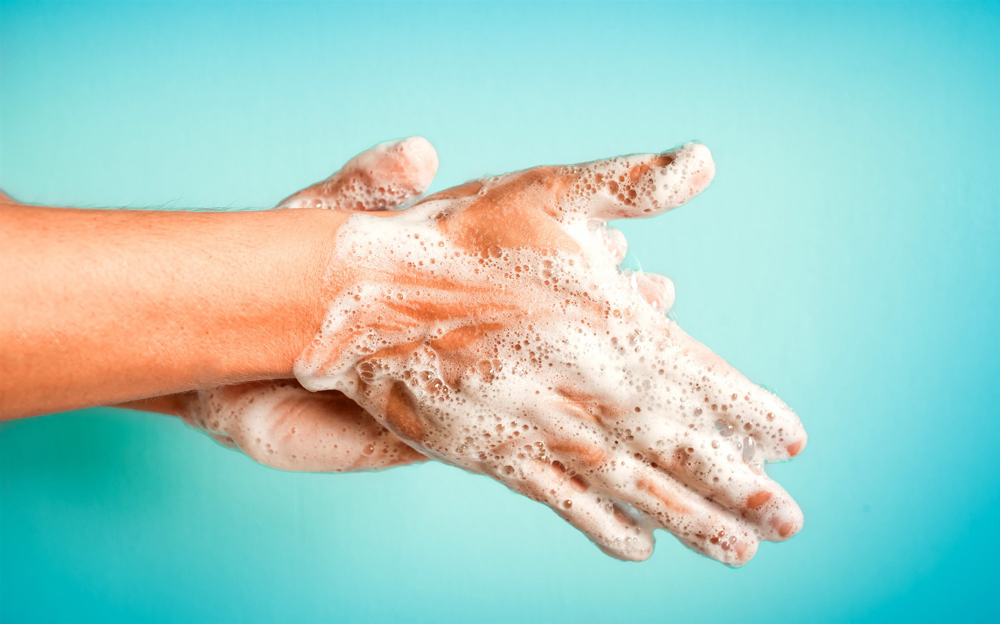

Standard Hygiene Guidelines
To prevent infection and to slow transmission of COVID-19, do the following:
- Wash your hands regularly with soap and water, or clean them with alcohol-based hand rub.
- Maintain at least 1 metre distance between you and people coughing or sneezing.
- Avoid touching your face.
- Cover your mouth and nose when coughing or sneezing.
- Stay home if you feel unwell.
- Refrain from smoking and other activities that weaken the lungs.
- Practice physical distancing
- Avoiding unnecessary travel
- staying away from large groups of people.
Resource: World Health Organisation 2020, Coronavirus WHO